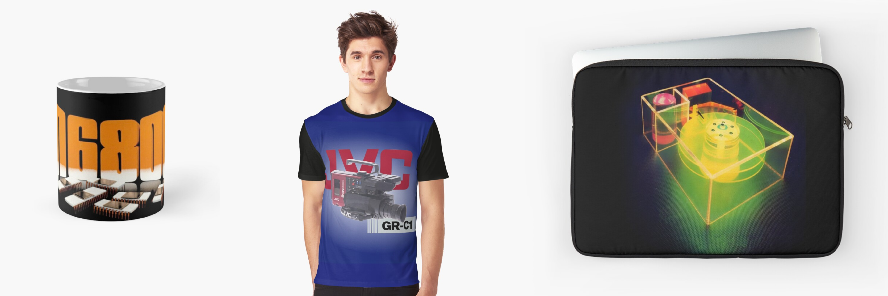

Heyo! My name is WysiWyg, and this is my official website to host all of my social media links, community files, wanted items, and more!
Check back once in a while for new information!
Click HERE to go to the file archive page, where I have some files that might be helpful to vintage computer
aficionados like myself!
Platform links and descriptions!
(Cntrl-click the links to open them in new windows!)
RedBubble
This is my
RedBubble
store! I take old, forgotten tshirts, photos from manuals and magazines, or really any 70s and 80s technology graphic and turn them into designs for Mugs, Tshirts, Hoodies, and more! All printings are high quality, and the materials on the items I have ordered have been rather nice considering the price! I also get a small portion of the proceeds from any item you buy, so by buying my designs, you are also directly supporting me!

YouTube
This is my
Youtube
page called "WysiWyg's Computer Repository", or WCR for short. I do overviews, repairs, and maybe even some longer length documentaries on computer hardware, as well as some smaller projects like music edits, car overviews, and whatnot. I strive for 1 video a month at the moment, so check back now and again to see if I've made some more interesting and unique content in video form!
Thingiverse
This is my
Thingiverse page! Any time that I 3d model and print a part for a computer, I will be sure to upload it to this page so that it can be downloaded and printed by anyone who may need the same part!
Twitter
My
Twitter is **BY FAR** the place where I am the most active online. I make daily posts about projects I am working on, issues I might be having with said projects, as well as general behind-the-scenes looks at what I do on a daily basis to bring all of you the highest quality content possible across these various platforms.
Discord
My Discord server is far more of a personal view of me and what I do, as well as some less professional things like memes and whatnot. It is also the best place to have conversations with not only me, but also all of the lovely people who have joined it.
HERE is the link to join the server!
Ko-Fi
Both my Redbubble page and my
Ko-Fi page are *AWESOME* ways to support me monetarily! If you appreciate the work that I do, consider maybe throwing a couple dollars my way! NOTE that it is absolutely **not** expected of ANYONE to support me monetarily.